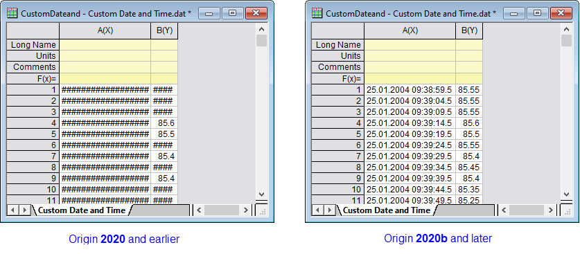

FAQ-1052 Origin-Arbeitsblätter zeigten gekürzten Inhalt mit Rautezeichen ### an. Was hat sich geändert?
Worksheet-Display-Pound-Signs-When-Truncated
Letztes Update: 16.04.2020
- 
Vor Origin 2020b, wenn die Zeichenabfolge in einer Blattzelle die Menge überschritten hat, die in der aktuellen Zellenbreite (Spaltenbreite) angezeigt werden konnte, zeigte Origin den Inhalt als eine Reihe von Rautezeichen an (######). Dies hat sich geändert in Anlehnung an das Arbeitsblattverhalten von MS Excel:
-
- Textzeichenketten zeigen nun keine Rautezeichen ###### mehr an, unabhängig von der Spaltenbreite. Um die vollständige Zeichenkette anzuzeigen, müssen Sie die Spaltenbreite vergrößern.
- Numerische Werte, die die Spaltenbreite überschreiten, werden zuerst auf die nächstliegende Dezimalstelle gerundet und, nur wenn dies nicht ausreicht, um die volle ganze Zahl anzuzeigen, werden Rautezeichen ###### anstelle vom numerischen Wert angezeigt.
- Dieses Runden der numerischen Werte hat nur Einfluss auf den angezeigten Wert. Der intern gespeicherte Wert ändert sich nicht.
- Um das alte Verhalten wiederherzustellen, bei die Rautezeichen ###### angezeigt wurde, wenn der Zelleninhalt nicht vollständig angezeigt werden konnte, setzen Sie die Systemvariable @WPE = 1. Eine Anleitung, wie Sie den Wert einer Systemvariablen ändern, finden Sie in dieser FAQ.
Schlüsselwörter:numerisch, Zahlen, kürzen, abschneiden, Zellenbreite, Spaltenbreite, Ellipse